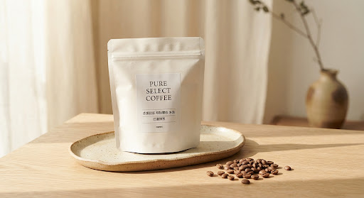

verified
產地直采
eco
100% 精品阿拉比卡
clean_hands
四道手工細選・去除瑕疵豆
local_shipping
全館滿 NT$ 1,000 免運
黑貓低溫/常溫宅配
air
單向排氣・充氮保鮮
牢牢鎖住第一道花果香
verified_user
四次挑豆品質把關
杯測乾淨・無焦苦味
衣索比亞・耶加雪菲
傳統水洗
淺中焙 Light-Medium
衣索比亞 耶加雪菲 水洗 G1
Ethiopia Yirgacheffe Washed G1 · 歌迪歐產區 精選批次
NT$ 520
NT$ 580
特惠折抵 89 折
stars
四選會員獨享 5% 回饋，本筆消費累積 26 點紅利
茉莉花香 Jasmine
檸檬柑橘 Citrus
蜂蜜甜感尾韻 Honey
烘焙程度 (Roast Level)
目前設定：淺中焙
極淺焙
淺中焙 (保留柔美果酸)
中焙
深焙
包裝規格 (Package Weight)
建議每杯使用 15~18g
研磨規格 (Grind Size)
強烈建議選擇「原豆」以享極致鮮度
1
現貨充足・下單後 48 小時內新鮮現烘現挑